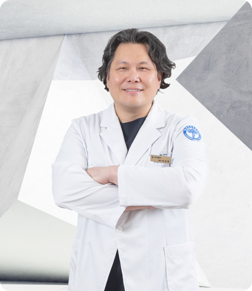
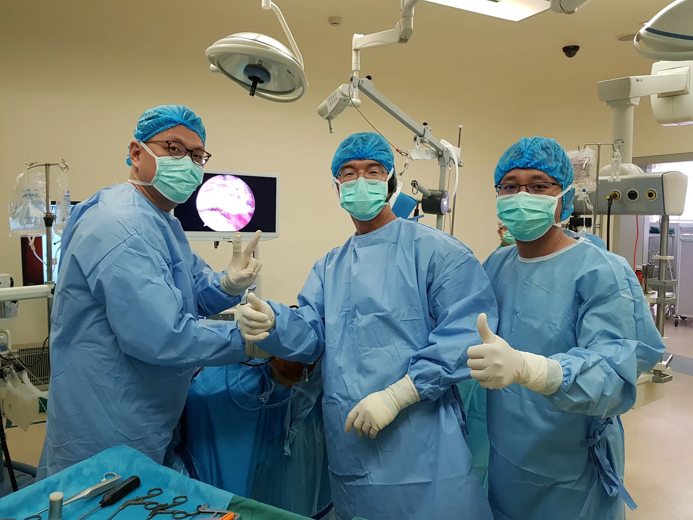
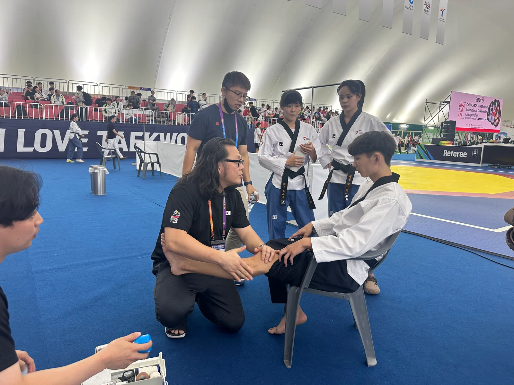
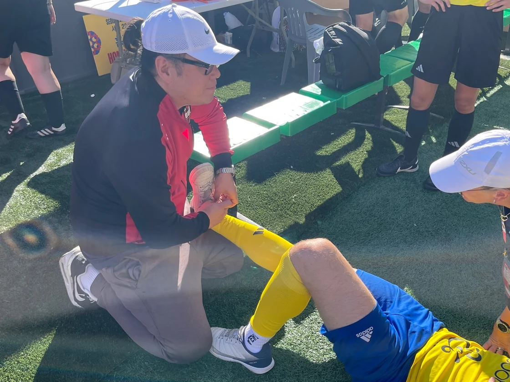
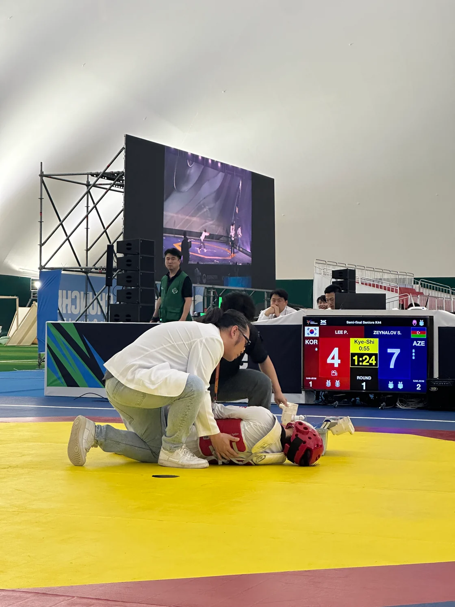
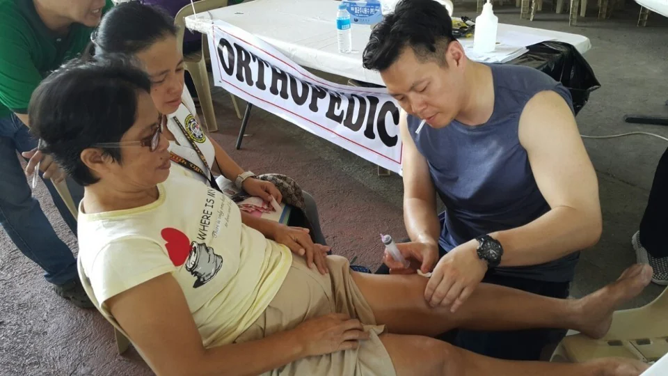
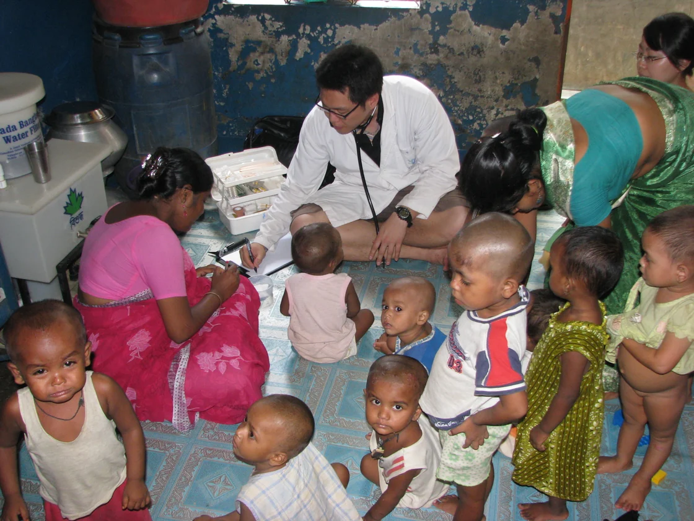
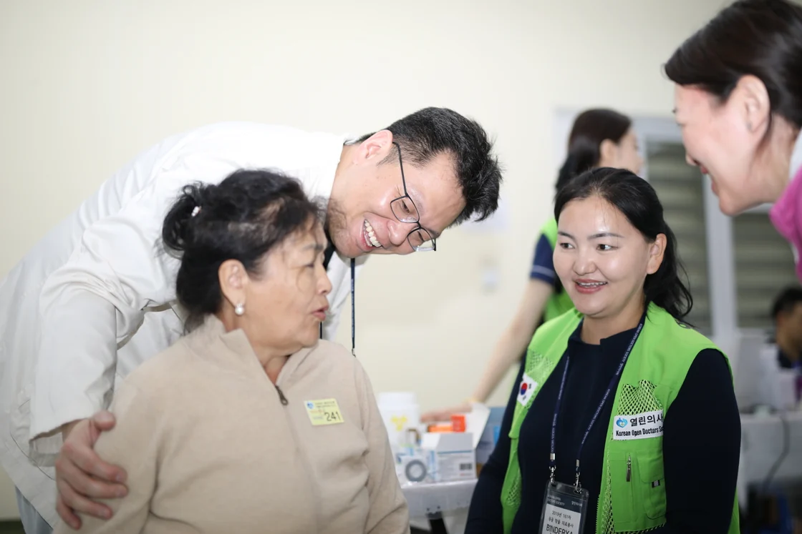

의료진 소개
건강한 움직임을 위한 맞춤 정형외과 진료
삼성G정형외과는 찾아주시는 모든 분들이 편안한 일상으로 돌아갈 수 있도록
한 분 한 분의 이야기와 개개인에 충분한 시간을 할애하고,
꼼꼼한 진단과 개인별 상태에 맞는 치료를 제공합니다.
SAMSUNG G ORTHOPEDIC CLINIC
받들고 섬기는 병원
이상현
대표원장 · 정형외과 전문의 · 의학박사

01 RESEARCH
연구하는 의원
더 나은 치료를 위한
배움을 멈추지 않습니다.
끊임없는 연구와 학술 교류를 바탕으로
환자에게 필요한 치료를 고민합니다.
의학박사 · 대학교수 출신
- 경희대학교 의과대학 정형외과학 박사
- 건국대학교 의과대학 정형외과 임상교수
- 성균관대학교 · 경희대학교 의과대학 외래교수
견관절 및 스포츠의학 전임의
삼성서울병원 견관절 및 스포츠의학 전임의

학력 및 전체 경력
학력
- 경희대학교 의과대학 의학과 졸업
- 경희대학교 일반대학원 의학과 정형외과학 석사 졸업
- 경희대학교 일반대학원 의학과 정형외과학 박사 졸업
경력
- 성균관대학교 의과대학 외래교수
- 경희대학교 의과대학 외래교수
- 건국대학교 의과대학 정형외과 임상교수
- 건국대학교 의과대학 충주병원 정형외과 임상교수
- 인천보훈병원 정형외과 부장
- 삼성서울병원 견관절 및 스포츠의학 전임의
- 국민건강보험 일산병원 인공관절센터 및 관절경 전임의
- 포천 국군일동병원 정형외과 과장 및 육군 군의관 (예비역 소령)
- 경희대학병원 정형외과 전문의
- 경희대학병원 정형외과 전공의
- 경희대학병원 수련의
논문 10편 · 학술 발표 및 수술 시연
논문
- Clinical and structural outcome of intra-articular steroid injection for early stiffness after arthroscopic rotator cuff repair. Su Cheol Kim, Il Su Kim, Sang Soo Shin, Sung Woo Hong, Sang Hyeon Lee, Jae Chul Yoo. Int Orthop. 2022 Mar;46(3):563-571. doi: 10.1007/s00264-021-05288-8. Epub 2022 Jan 31.
- Two-portal technique using a flexible reamer system is a safe and effective method for transportal anterior cruciate ligament reconstruction. Yoon KH, Kim JH, Kwon YB, Kim EJ, Lee SH, Kim SG.Arch Orthop Trauma Surg. 2020 Mar;140(3):383-390.
- Hidden long head of the biceps tendon instability and concealed intratendinous subscapularis tears. Chae SH, Jung TW, Lee SH, Kim MJ, Park SM, Jung JY, Yoo JC.Orthop J Sports Med. 2020 Jan 31;8(1):2325967119898123.
- Rationale for small glenoid baseplate: position of central cage within glenoid vault (Exactech® Equinoxe® Reverse System).Oh JH, Lee SH, Rhee SM, Jeong HJ, Yoo JH. Clinics in Shoulder and Elbow Vol. 22, No. 1, March, 2019.
- The septic knee arthritis caused by Klebsiella pneumoniae in a patient with type 2 diabetes mellitus and osteoarthritis of the knee. Ha JW, Lee SH, Park SH, Kim TY. Clin Orthop Surg. 2019 54(1):67-71.
- Treatment of recurrent hemarthrosis after total knee arthroplasty. Yoo JH, Oh HC, Park SH, Lee SH, Lee YJ, Kim SH. Knee Surg Relat Res 2018;30(2):147-152.
- Efficacy of additive trans-cuff augmentation sutures for proximal humeral fractures stabilized by locking plates in elderly patients. Cho NS, Shim HS, Lee SH, Jeon JW, Rhee YG. Clinics in Shoulder and Elbow Vol. 18, No. 2, June, 2015.
- Long-term survival rate of implants and modes of failure after revision total knee arthroplasty by a single surgeon. Bae DK, Song SJ, Heo DB, Lee SH, Song WJ. The Journal of Arthroplasty 28 (2013) 1130–1134.
- Treatment for hallux valgus with chevron metatarsal osteotomy in patients over 60 years old. Jeong BO, Lee SH. J Korean Foo Ankle Soc 2012 16(4):223-228.
- The hepatotoxicity of non-steroidal anti-inflammatory drugs in the patients with liver disease. The Journal of Orthopaedic Pain Society. 2012 Sep;3(2).
학술 발표 및 수술 시연
- 인도 정형외과 학회 Shoulder Conclave Live surgery 시연
- 태국 정형외과 스포츠의학회 TOSSM live surgery 시연
- Smith & Nephew, All around the shoulder – Foshan Hospital of TCM, live surgery 시연
- SMC shoulder symposium live surgery 시연
- 대한정형외과학회 추계학술대회 구연 발표
- 대한 정형외과 컴퓨터수술학회(CAOS) 구연 발표
- 대한 고관절학회 춘계학술대회 구연 발표
- 대한 슬관절학회 춘계학술대회 구연 발표
- 대한 견주관절학회 춘계학술대회 구연 발표
- 대한 관절경학회 춘계학술대회 구연 발표
- 아시아골다공증학회 학술대회(The Asian Federation of Osteoporosis Societies)발표
- 한일 osteotomy symposium 발표
- 호주 정형외과학회 및 아시아-태평양 정형외과 스포츠의학회 AOA & APKASS combined meeting 참석
- 유럽 견주관절학회 SECEC-ESSSE 구연 발표
- Z*Bike shoulder & elbow update 구연 발표
교육·연수 이수 및 수상
교육·워크숍 이수
- AOspine, MIS surgery Bangkok Cadaver workshop 이수
- Tornier, 어깨인공관절 Reverse total shoulder cadaver workshop 이수
- Smith & Nephew, Singapore, Shoulder arthroscope Cadaver workshop 이수
- 경희 The fresh shoulder cadaveric workshop in Bangkok 이수
- AORecon course – Complex total hip & knee arthroplasty 이수
- AOTrauma principle course - Basic principles of fracture management 이수
- AOTrauma masters course - Lower extremity with anatomical specimens 이수
- AOSpine principles symposium 이수
- AOSpine advanced video symposium 이수
- 대한 외상학회 한국형 외상 처치술(KTAT) 이수
- 고려대학교 관절경 연구회 knee cadaver workshop 이수
- 고려대학교 관절경 연구회 shoulder cadaver workshop 이수
- 세브란스 관절경 연구회 knee & ankle cadaver workshop 이수
- 세브란스 관절경 연구회 shoulder & elbow cadaver workshop 이수
- 고려대학교 슬관절 연구회 osteotomy cadaver workshop 이수
- 대한 미세수술학회 미세수술 workshop 이수
- 대한 통증의학회 TPI training course 이수
- 대한 정형외과 통증의학회 TPI training course 이수
연수
- 연세대학교 세브란스 관절경 연구회 연수
- Switzerland AO Davos Course 연수
수상
- 제55차 대한 정형외과학회 추계학술대회 학술논문상
- 경희대학병원 최우수 전공의상
학회활동
- 대한 관절경학회 학술위원회 편집위원 및 정회원
- 대한 정형외과학회 정회원
- 대한 성장의학회 정회원
- 대한 견주관절학회 정회원
- 대한 고관절학회 정회원
- 대한 골절학회 정회원
- 대한 슬관절학회 정회원
- 대한 스포츠의학회 정회원
- 대한 정형외과 스포츠의학회 정회원
- 대한 골대사학회 정회원
- 대한 족부족관절학회 준회원
02 SPORTS MEDICINE
함께 뛰는 의원
움직임의 현장에서
회복의 길을 함께합니다.
선수들의 부상과 회복을 함께해 온 경험으로
환자의 일상 속 움직임을 살핍니다.
스포츠의학 인증 전문의
- 대한항공 점보스 배구팀 팀 주치의
- LG twins 야구팀 메디컬 테스트 담당의
- KLPGA 투어 주치의
대회 의료지원 활동
- 춘천국제태권도대회 OMD
- 서울 국제 홈리스 월드컵 필드 닥터
- ATP 서울 오픈 국제 남자 챌린저 테니스 대회 필드 닥터



팀·대회 주치의 및 필드 닥터 전체 이력
스포츠의학 인증 전문의
- 서울특별시 서울 걷.자 페스티벌 주치의
- 대한항공 점보스 배구팀 팀 주치의
- LG twins 야구팀 메디컬 테스트 담당의
- 코리아 오픈 춘천국제태권도대회 OMD (Official Medical Director)
- 서울 국제 홈리스 월드컵 필드 닥터
- ATP 서울 오픈 국제 남자 챌린저 테니스 대회 필드 닥터
- 대한치과협회 스마일 런 페스티벌 필드 닥터
KLPGA 투어 주치의
- SK쉴더스-SK텔리콤 챔피언쉽, 춘천 라비에벨
- 두산 매치플레이, 춘천 라데나
- 한경 레이디스컵, 포천 힐스
- 대보하우스디 오픈, 파주 서원밸리
- 하나금융그룹 챔피언쉽, 인천 베어베스트 청라
- 인카금융 더헤븐 마스터즈, 더 헤븐 안산
03 SHARING & SERVICE
나누는 의원
의술을 넘어,
따뜻한 마음을 나눕니다.
국내외 20년 이상 이어온 의료봉사.
도움이 필요한 곳에서 사람을 먼저 살피는 마음을
일상의 진료에서도 이어가겠습니다.
봉사와 나눔의 발자취
- MSD Korea – 신문 청년의사 주최 청년 슈바이처상 사회활동부문
- 국방부 의무사령관 표창 자랑스런 의무인상
- 사단법인 경희국제의료협력회 이사
- 사단법인 선한의료포럼 정회원
- 사단법인 열린의사회 정회원
- 사단법인 굿피플 의료봉사회 정회원



해외의료봉사
네팔 · 방글라데시 · 필리핀 · 인도 · 베트남 · 라오스 · 몽골
캄보디아 · 카자흐스탄 · 말라위